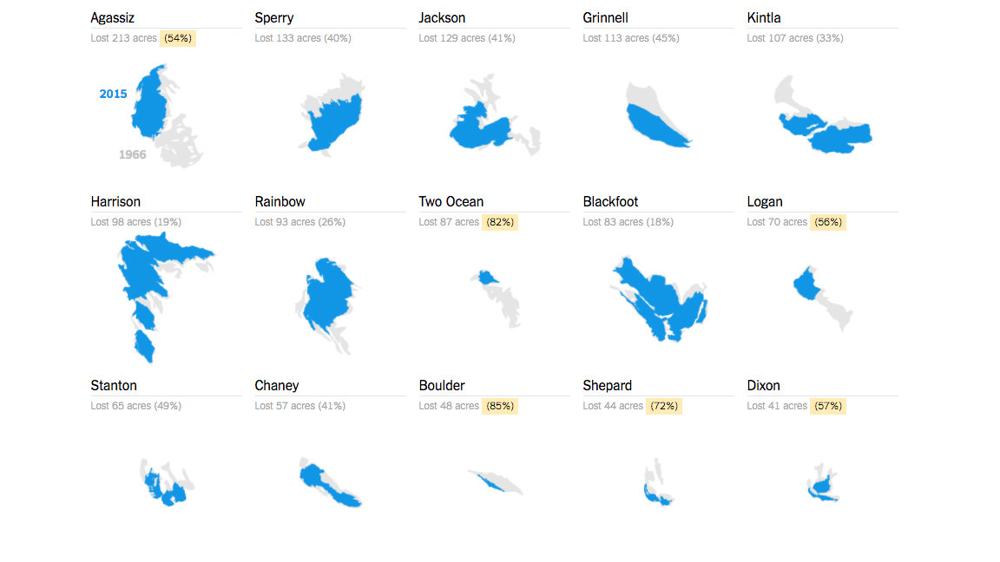

Glacier Trends and Water Availability - Quantitative Data
Quantitative Data
Quantitative data is crucial for understanding glacier melt and its impact on water availability. This section presents graphs and charts from reputable sources, showing clear trends over time. The data highlights the urgent need to address climate change and protect our water resources.

Sources:
NSIDC Glacier Mass BalanceUnited Nations Environment Programme (UNEP)European Space Agency (ESA)